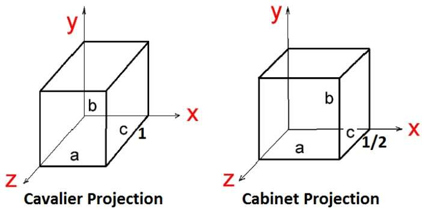

In the 2D system, we use only two coordinates X and Y but in 3D, an extra coordinate Z is added. 3D graphics techniques and their application are fundamental to the entertainment, games, and computer-aided design industries. It is a continuing area of research in scientific visualization.
Furthermore, 3D graphics components are now a part of almost every personal computer and, although traditionally intended for graphics-intensive software such as games, they are increasingly being used by other applications.
Parallel projection discards z-coordinate and parallel lines from each vertex on the object are extended until they intersect the view plane. In parallel projection, we specify a direction of projection instead of center of projection.
In parallel projection, the distance from the center of projection to project plane is infinite. In this type of projection, we connect the projected vertices by line segments which correspond to connections on the original object.
Parallel projections are less realistic, but they are good for exact measurements. In this type of projections, parallel lines remain parallel and angles are not preserved. Various types of parallel projections are shown in the following hierarchy.
In orthographic projection the direction of projection is normal to the projection of the plane. There are three types of orthographic projections −
In orthographic projection, the direction of projection is not normal to the projection of plane. In oblique projection, we can view the object better than orthographic projection.
There are two types of oblique projections − Cavalier and Cabinet. The Cavalier projection makes 45° angle with the projection plane. The projection of a line perpendicular to the view plane has the same length as the line itself in Cavalier projection. In a cavalier projection, the foreshortening factors for all three principal directions are equal.
The Cabinet projection makes 63.4° angle with the projection plane. In Cabinet projection, lines perpendicular to the viewing surface are projected at ½ their actual length. Both the projections are shown in the following figure −
Orthographic projections that show more than one side of an object are called axonometric orthographic projections. The most common axonometric projection is an isometric projection where the projection plane intersects each coordinate axis in the model coordinate system at an equal distance. In this projection parallelism of lines are preserved but angles are not preserved. The following figure shows isometric projection −
In perspective projection, the distance from the center of projection to project plane is finite and the size of the object varies inversely with distance which looks more realistic.
The distance and angles are not preserved and parallel lines do not remain parallel. Instead, they all converge at a single point called center of projection or projection reference point. There are 3 types of perspective projections which are shown in the following chart.
One point perspective projection is simple to draw.
Two point perspective projection gives better impression of depth.
Three point perspective projection is most difficult to draw.
The following figure shows all the three types of perspective projection −
In 3D translation, we transfer the Z coordinate along with the X and Y coordinates. The process for translation in 3D is similar to 2D translation. A translation moves an object into a different position on the screen.
The following figure shows the effect of translation −
A point can be translated in 3D by adding translation coordinate $(t_{x,} t_{y,} t_{z})$ to the original coordinate (X, Y, Z) to get the new coordinate (X’, Y’, Z’).
$T = \begin{bmatrix} 1& 0& 0& 0\\ 0& 1& 0& 0\\ 0& 0& 1& 0\\ t_{x}& t_{y}& t_{z}& 1\\ \end{bmatrix}$
P’ = P·T
$[X' \:\: Y' \:\: Z' \:\: 1] \: = \: [X \:\: Y \:\: Z \:\: 1] \: \begin{bmatrix} 1& 0& 0& 0\\ 0& 1& 0& 0\\ 0& 0& 1& 0\\ t_{x}& t_{y}& t_{z}& 1\\ \end{bmatrix}$
$= [X + t_{x} \:\:\: Y + t_{y} \:\:\: Z + t_{z} \:\:\: 1]$